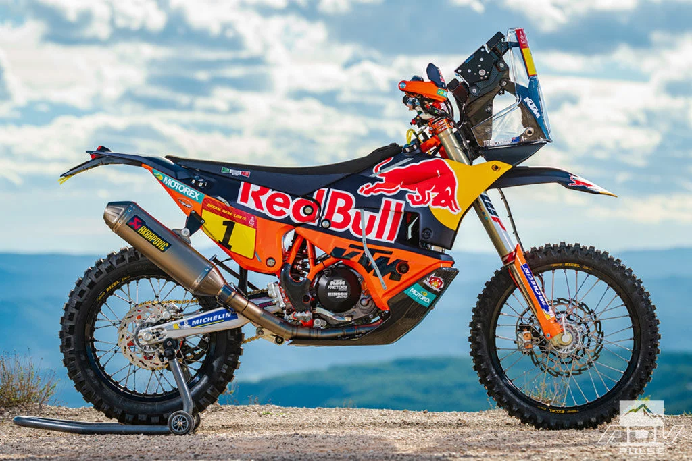
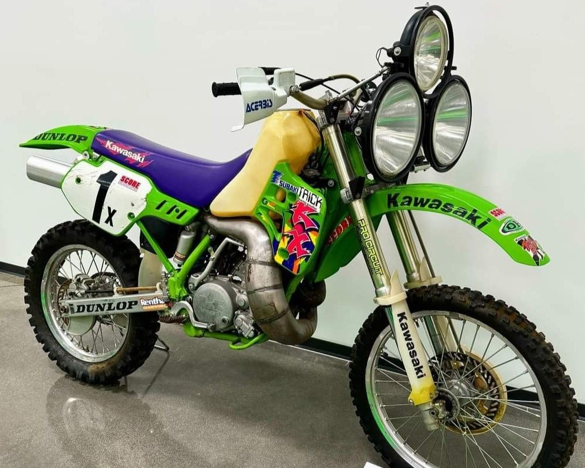
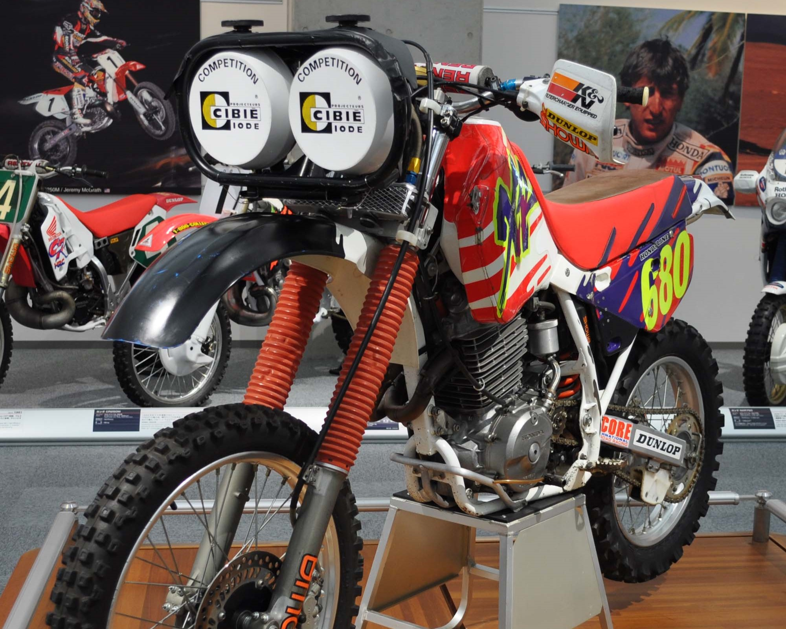

This page is under development. This project is ongoing and
the displayed information is incomplete and not up to date.
The Background
Offroad motorcycles or dirt bikes are primarily designed with reduced weight and high power for short distances
In rare occasions, dirt bikes are modified to beat long distance, high speed races. Most known are the Dakar Rallye
Africa Eco Race and the Baja 1000
With the first two having their distinctively designed navigation towers for their extensive roadbook navigation equipment.


The latter Baja 1000 does not require such navigation equipment, as the course is preset and nowerdays shared in GPS files. However, as this race can and will have periods of riding at night, the focus shifted to
extensive, and sometimes ludicrous lighting

